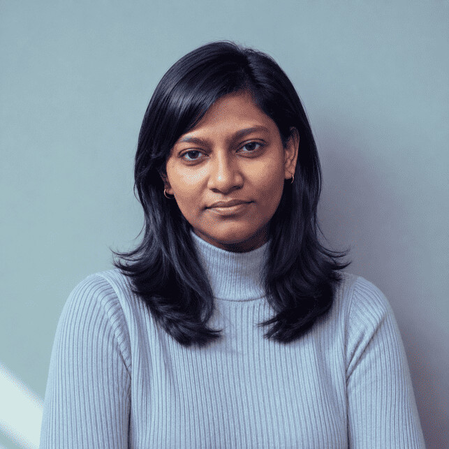
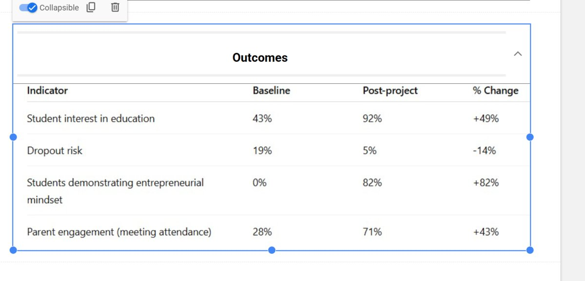
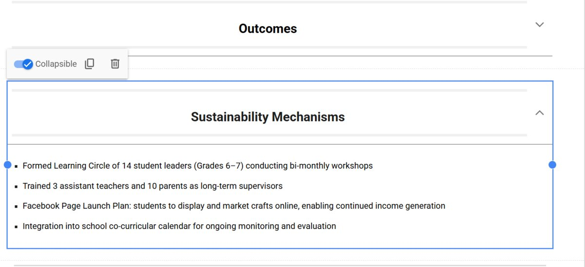
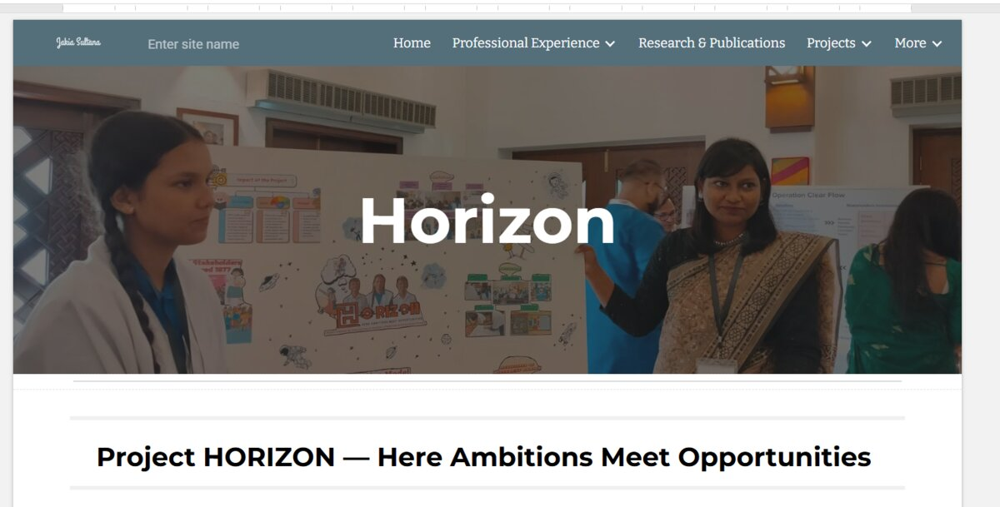
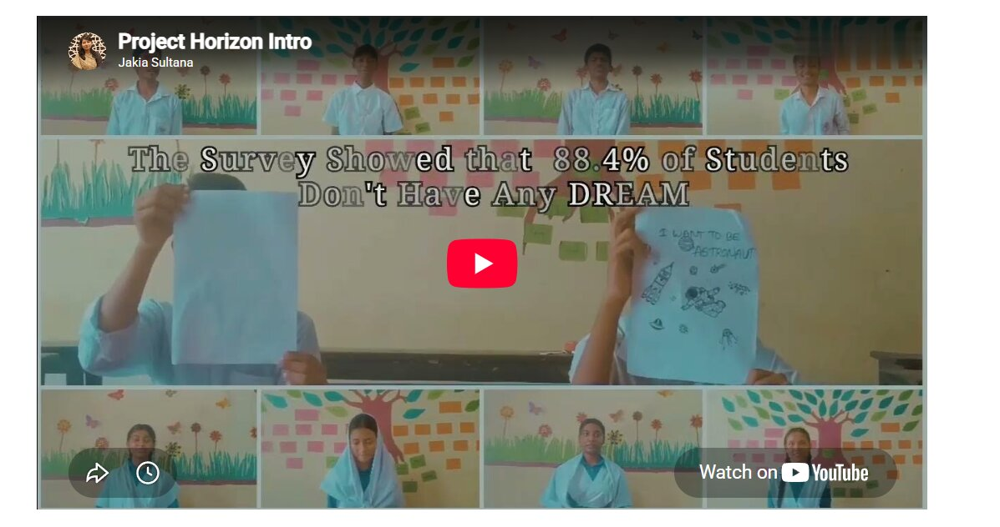
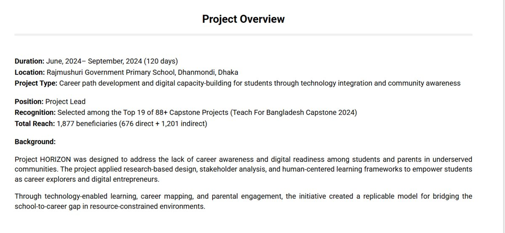
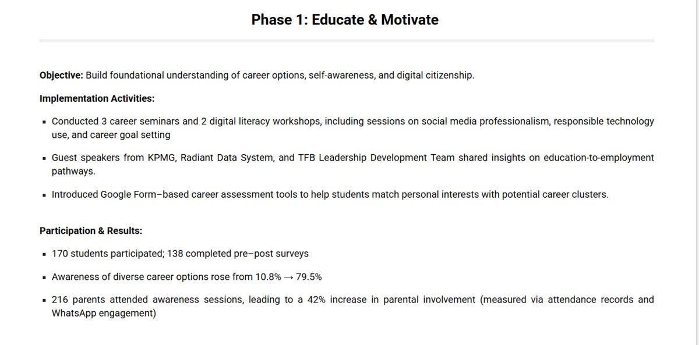
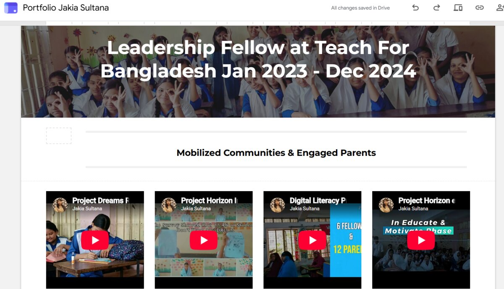

Jakia Sultana
MEd Candidate, BRAC Institute of Educational Development · Research & Grants Lead, Altlearn · Teach For Bangladesh Fellow
I study where AI support for learning ends and substitution for thinking begins, focusing on how generative AI shapes metacognitive monitoring and assessment validity in higher education.

About me
I am an emerging education researcher from Bangladesh investigating how generative AI is transforming learning, metacognition, and assessment in higher education. My research examines when AI supports students' thinking and metacognitive monitoring, and when it begins to substitute for the cognitive processes required for independent competence.
I currently serve as Research & Grants Lead at Altlearn, where I lead education research and evidence-informed programme development across social-emotional learning, AI-supported pedagogy, career education, and STEM initiatives. My work spans teacher professional development, AI literacy, mixed-methods evaluation, grant development, and monitoring, evaluation, and learning (MEAL).
Previously, as a Leadership Fellow at Teach For Bangladesh, I designed more than 332 technology-enhanced lessons and contributed to initiatives that reached over 1,800 students and 3,000 community members. That experience grounded my research questions in real classroom constraints rather than abstract theory.
My path into education research began in business, with a BBA in Accounting, magna cum laude, before classroom teaching redirected me toward the question of how people actually learn. That trajectory now shapes my goal: producing rigorous research that helps education systems use AI to enhance human thinking, rather than quietly replace it.
Research experience
Manuscript under review. Full details to follow. See publication entry
BRAC University
Main question: How do the head teachers, teachers, and students in government secondary schools in Dhaka view their schools' readiness for AI, the challenges of using it, and what might help overcome those challenges?
How ready are the head teachers and their schools for AI, what challenges do they see, and what do they think would help?
How ready do teachers feel to use AI in their teaching, what challenges do they face, and what do they think would help?
How ready are students to use AI for learning, what challenges do they face around access and risks, and what do they think would help make it useful and fair?
Methodology: a basic interpretive qualitative design across two government secondary schools in Dhaka, with around 18 to 20 participants: head teachers and teachers through individual interviews, and grade 8 students through focus group discussions. Sessions are conducted in Bangla, transcribed, translated, and analyzed using thematic analysis to compare perspectives across the three stakeholder groups.
- Contribute to a multi-year initiative investigating the psychological, pedagogical, and financial impacts of AI chatbots in education across seven major studies.
- Design and implement experimental, quasi-experimental, and mixed-methods research examining learner cognition and AI-assisted pedagogy.
- Conduct literature reviews, data collection, and statistical analysis informing four peer-reviewed publications.
Peer-reviewed articles
-
2025
Can generative AI be an effective co-teacher?
-
2024
Is ChatGPT a menace for creative writing ability?
-
2024
Why do students use ChatGPT?
-
2023
What triggers you to buy green products?
Manuscript under review
-
2026
The paradox of AI-assisted learning: helping students to think, or think less? Under review
Field projects
Community-rooted initiatives designed and led during my fellowship with Teach For Bangladesh, combining research, instructional design, and stakeholder engagement.
Dreams Revived
A dropout-prevention initiative combining skill-based training, digital literacy, and financial education to reconnect economically vulnerable families with the long-term value of education. Selected among the top 5 of 70+ projects at the Teach For Bangladesh Capstone Symposium 2023.



Project Horizon
A student empowerment and career-readiness initiative emphasizing innovation in career awareness. Recognized among the top 19 of 88+ projects across three regions at the Teach For Bangladesh Capstone Symposium 2024, and presented to 270+ stakeholders.



Field videos
A collection of videos from my classroom and community work in the field: lessons, workshops, and project milestones.
Tell me what each video shows and I'll move it into the right project with a proper caption.
Professional experience
Dhaka · Hybrid
- Lead education research initiatives, including a social-emotional learning (SEL) study using a mixed-methods evaluation design.
- Design teacher training modules integrating AI-supported pedagogy for English-medium schools, with built-in assessment frameworks.
- Direct programme development across Career Informed Pedagogy, Career Education Through Astronomy, and STEM initiatives.
- Prepare grant applications, logframes, and funding proposals; oversee monitoring, evaluation, and learning (MEAL) systems.

Dhaka, Bangladesh
- Developed and implemented 332 data-informed, technology-enhanced lessons and 17 asynchronous learning modules, advancing literacy and digital fluency for 170 secondary students.
- Applied differentiated instruction and CASEL's SEL framework, contributing to a 23% improvement in literacy proficiency.
- Trained 60+ parents through the BOLD Program and 55+ parents in digital citizenship under the national ESOL initiative.
- Mentored 12 new Fellows (Cohort 2025) across four regions in curriculum adaptation and blended learning design.
- Received Community Impact Recognition (2024) for leadership in blended learning integration and measurable student outcomes.
- Mentored 75+ students across social psychology, international relations, and gender studies courses.
- Collaborated with faculty on grade reporting and assessment administration.
- Facilitated departmental sessions on social inequity and gender bias for approximately 150 students.
Awards and achievements
Academic Awards & Scholarships
- Magna Cum Laude, East West University, 2022
- Merit Scholarship, East West University, Spring-Fall 2021
- Dean's List Scholarship, East West University, 2019-2021
Project & Leadership Awards
- Dreams Revived, Top 5 of 70+ projects, TFB Capstone Symposium 2023
- Project Horizon, Top 19 of 88+ projects, TFB Capstone Symposium 2024
- Community Impact Recognition, Teach For Bangladesh, 2024
Debate Achievements
- Champion, EWU Inter-Department Debate Tournament, 2018
- Champion, EWUDC Intra-Club Debate Championship, 2018
- Debater of the Tournament & Final, EWU Inter-Department & EWUDC, 2018
Student Leadership
- General Secretary, East West University Debating Club, trained 150+ members and 4 debate teams
- Communication Director, EWU Open Debate, managed 60+ teams, 250+ debaters
Download my CV
Full academic CV
Education, publications, research and teaching experience, and references.
Contact
For collaboration, questions, or speaking engagements, reach out directly.
Phone
+880 1631 404805